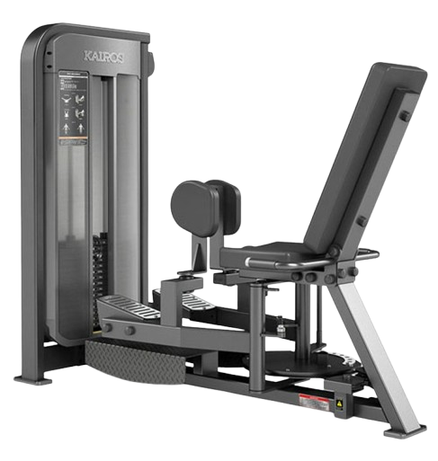
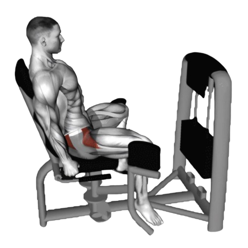
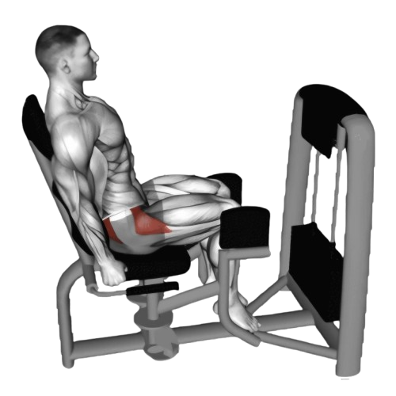

이너아웃사이

- 발판을 밀어내며 다리를 바깥쪽으로 벌린다.
- 다리를 벌린 위치에서 1~2초간 유지하고, 엉덩이 근육이 긴장하는 것을 느낀다.
- 이때 호흡은 뱉는다.
- 다리를 원래 위치로 부드럽게 오므린다. 이때에도 엉덩이 근육에 긴장을 유지한다.
- 다리를 서서히 오므리며 저항을 느낀다
- 이때 호흡은 마신다.

주의사항
- 다리를 벌릴 때 무릎이 안쪽으로 꺾이지 않도록 주의한다.
- 다리를 벌릴 때 고관절에 무리가 가지 않도록 주의한다.
- 처음 시작할 때는 적절한 저항을 선택하고, 중량이 너무 무겁지 않도록 한다.
- 부상을 방지하기 위해 항상 준비 운동과 스트레칭을 한다.
운동부위 및 효과
- 대둔근, 중둔근, 소둔근, 허벅지 외측 근육
- 엉덩이와 허벅지의 근육을 강화한다.
- 엉덩이와 허벅지의 라인을 매끄럽고 탄력 있게 만든다.